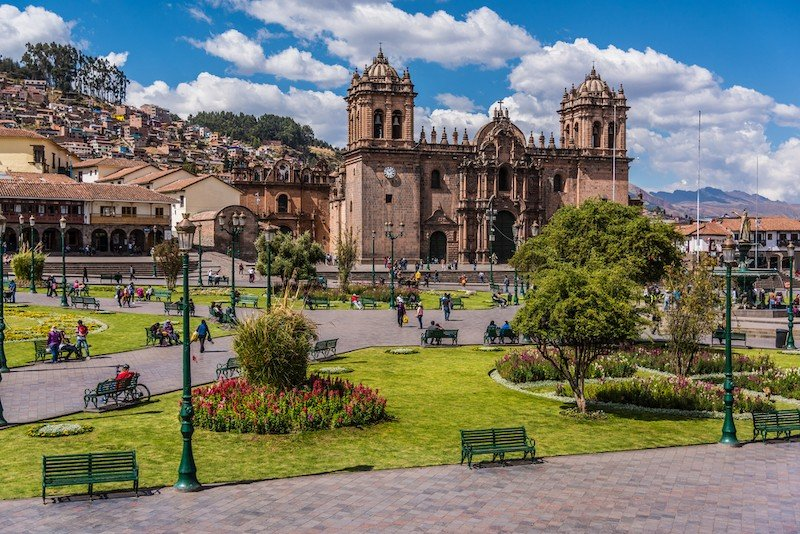

Cusco es una de las ciudades más importantes de la historia del Perú. Fue el centro político y cultural del Imperio inca, posteriormente fue conquistado por los españoles y se convirtió en una importante ciudad colonial.
Origenes de cuzco
Antes de los incas, el valle del Cusco ya estaba habitado por diferentes pueblos andinos. La región tenía una larga tradición agrícola y cultural. Según la tradición inca, el origen de Cusco está relacionado con Manco Cápac y Mama Ocllo, quienes habrían llegado al valle y fundado la ciudad. Otra tradición, recogida en las crónicas, cuenta que Manco Cápac y Mama Huaco llegaron desde la zona de Pacaritambo. Estas historias combinan elementos religiosos, míticos y políticos, por lo que no deben tomarse como relatos históricos literalmente comprobados.
El Cusco de los incas
El gran crecimiento de Cusco ocurrió durante la expansión del Estado inca, especialmente bajo gobernantes como Pachacútec en el siglo XV. Pachacútec reorganizó Cusco y convirtió la ciudad en el centro de un enorme Estado conocido como Tahuantinsuyo, que llegó a abarcar territorios de los actuales:
Cusco tenía una enorme importancia política y religiosa. Entre sus construcciones destacaban:
La ciudad también tenía una organización simbólica y política. Las crónicas españolas describen a Cusco como una ciudad dividida en sectores relacionados con la organización del Estado inca.
Para mayor informacion, haga click